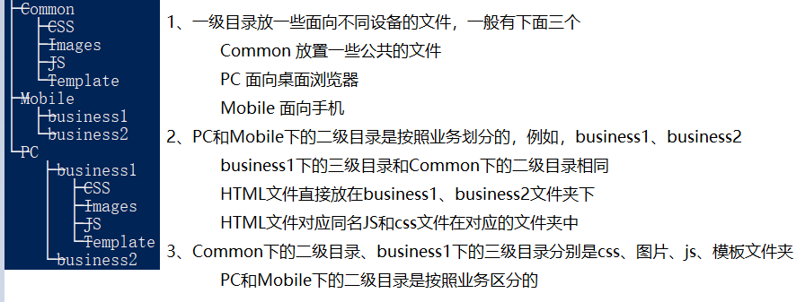
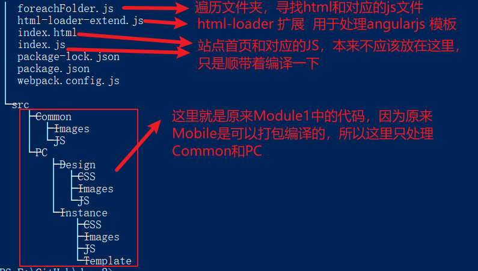

AngularJS相关
记录一下AngularJS相关的知识点
AngularJS + webpack
现在写他相关的笔记，有点…… 没有办法，公司PC端的项目还在用AngularJS
，不知道什么时候能替换掉，React、Vue还没有的时候就开始用了，对你说的没错，一直到现在，一直在用……
看着大前端的发展，JavaScript每年都有新的语法、各种各种的构建工具……我们心中抑制不住的激动，太爽了。但是当我们面对AngularJS
时，来了一盆冷水。忍不住、忍不住，难道AngularJS就不能参与进来吗？尝试一下，让他也能搭上这班列车……
先看一下我们某一个模块的目录结构，如下：（其中，Mobile是编译过来的，而Common和PC则是源码直接放在这里，也是我们这次改造的目标）

确定源代码和目标路径
首先确定一下站点根路径，这里为了测试，新建了一个站点，根路径为：F:\GitHub\mySite。主页为：
F:\GitHub\mySite\index.html。之后就是公司可能有好多部门，不同的部门维护不同的模块，例如，我们维护Module1
，路径为：F:\GitHub\mySite\BaseModule\Module1，后面的子文件夹就是Common、Mobile、PC
了，这是原来的结构，也就是现在编译输出路径。在确定一下源码路径：F:\GitHub\angularjs-webpack\src
，其中“angularjs-webpack”就是我们的源码webpack的项目了。下面看一下“angularjs-webpack”目录结构：

webpack.config.js
根目录对应好了之后就是源代码怎么映射到目标路径中，两边的目录结构最好能够一致。之前Vue的时候记录过：Vue3 + webpack 多入口最简demo、或者学习rollup时：rollup相关， 这里也是在前两篇笔记的基础上适当的修改来完成这项工作的。其中主要的工作都是在webpack.config.js中完成的，下面看一下代码：
webpack.config.js
组装多页面入口和输出
因为模块下的HTML可能比较多（也就是webpack多入口），所以单独提取了一个方法：
foreachFolder.js
html-loader扩展处理AngularJS模板
会忽略html文件中ng-template的部分，所以写了一个方法自己解析，这里的方法只是一个实现思路，尚不完善：
html-loader-extend.js
遇到的一些问题
- 利用babel将ES6+转ES5时，这里采用的配置是非全局注入方式，这种方式不能抽取core-js代码
- 需要在JS文件引入依赖的less文件，如果依赖多个less文件，则会合并成一个，文件名称和js文件名称相同。需要特别注意！！！
-
html文件中写<script type="text/ng-template"></script>模板的问题。html-loader会忽略其中的内容，如果里面有<img src="../../Common/Images/no-data.png">类似这样的代码，图片是相对源文件路径的，默认不会解析，对应的图片也不能拷贝到响应的目录下。目前有三种处理方式：
- 将模板单独的放在一个html文件中【推荐】
- 在html中使用绝对路径（例如："/BaseModule/Module1/Common/Images/no-data.png"）并且JS中require一下图片路径，例如：require("../../Common/Images/no-data.png")
- 利用 html-loader 的 preprocessor 自己解析
- html页面是否"inject"的问题，如果注入，则会在html文件头部添加 依赖的JS和CSS ；如果不注入，则需要自己添加依赖的CSS
代码下载
上面只是展示了部分代码，整体代码，请点击：下载